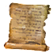

Список Шпионов
Предметы / С заданий
Открыть в интерактивной вики →
| Вес | 1 |
|---|
Описание
Список Шпионов, оплачиваемых Утором. Не только Утор жаждет заполучить его, но также контрразведческие службы Империи и Армии Таэрна. Задачу на получение дает  Хумбольд
Хумбольд
Хумбольд